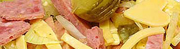

Wurst-Käsesalat
5,5 von 6gruyère mittel reif, salat wurst, frühlingszwiebel, pepperoni und essiggurken in
mundgerechte stücke schneiden und in eine schüssel geben, salatsauce dazu.

gruyère mittel reif, salat wurst, frühlingszwiebel, pepperoni und essiggurken in
mundgerechte stücke schneiden und in eine schüssel geben, salatsauce dazu.

Montagsplausch Nr. 15.